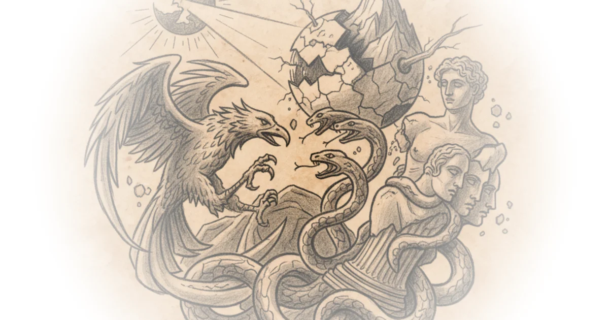

The philosopher Friedrich Nietzsche predicted a future where thinkers would stop trying to convince others of universal truths. Instead, they would explore personal truths — the kind that don't apply to everyone.
That's because Nietzsche believed something radical: there is no common good. When your neighbor takes it into his mouth, good is no longer good. The expression contradicts itself. What can be common is always small of value. Everything rare belongs to the rare. The depths belong to the profound. The delicacies belong to the refined.

This is Section 42 of Beyond Good and Evil, where Nietzsche introduces what he calls a "new order of philosophers." He ventures to baptize them by a name not without danger: tempters. These are thinkers who lure, entice, and draw out — philosophers who wish to remain something of a puzzle. They are hidden, masked, impossible for others to fully understand.
"Will there be new friends of the truth? These coming philosophers, very probably, for all philosophers hitherto have loved their truths. But assuredly they will not be dogmatiks."
The problem with dogmatism, for Nietzsche, is that it demands your truth must work for everyone. He finds this contrary to both pride and taste. One must renounce the bad taste of wishing to agree with many people. When another person has an opinion, they have no easily a right to it.
This runs counter to everything we typically expect from philosophy. We're taught to make arguments, bring people on board, win debates. Nietzsche says no — you don't even have the right to agree with me. I will not accept your agreement. The very notion of convincing others is undercut.
The Democratic Critique
But there's more. These new philosophers are also not merely free spirits in the way modern free-thinkers understand them. Nietzsche distinguishes his concept from what he sees as a narrow, prepossessed class of spirits who desire almost the opposite of his intentions. They belong to the levelers — those who wrongly name themselves free spirits while serving democratic tastes and modern ideals.
These are men without solitude, without personal solitude. Blunt honest fellows, to whom neither courage nor honorable conduct ought to be denied. But they are not free. They're ludicrously superficial in their innate partiality for the cause of almost all human misery and failure in the old forms in which society has hitherto existed.
What they're after is the universal green meadow happiness of the herd together with security, safety, comfort, and the alleviation of life for everyone. Their two most frequently chanted songs and doctrines are called equality of rights and sympathy for all sufferers. Suffering itself is looked upon by them as something which must be done away with.
Nietzsche inverts this entirely. He believes the opposite conditions have served humanity best. The plant man has grown most vigorously under danger — his inventive faculty and dissembling power developed into subtlety and daring under long oppression and compulsion. His will to life increased to the unconditional will to power.
"We believe that severity, violence, slavery, danger in the street and in the heart, secrecy, stoicism, tempters arts, and devilry of every kind, serves as well for the elevation of the human species as its opposite."
This is where Nietzsche gets most controversial. He argues that everything wicked, terrible, tyrannical, predatory, and serpentine in man serves for the elevation of the human species. Not just despite the dangers — but because of them.
Counterpoints
Critics might argue this reading of Nietzsche wildly misrepresents his actual project. Others would note that interpreting "elevation" through violence and oppression gives license to exactly the kind of brutality Nietzsche spent entire volumes criticizing. The passage above reads more as diagnosis than endorsement — a description of how power actually operates rather than an ethical prescription.
The interpretation also assumes what counts as "refined" or "great" is fixed, when Nietzsche's own writing suggests these values are precisely what each individual creates for themselves.
Bottom Line
Cecil's analysis captures something essential about Nietzsche's critique: the rejection of universal good isn't merely academic — it's a fundamental attack on democracy itself. His strongest point is that universality became proof of wrongness in Nietzsche's eyes. The biggest vulnerability is that this reading requires careful distinction between historical observation and ethical advocacy, which the transcript doesn't always maintain.